Леви Аккерман
Мой муж
'Я хочу положить конец этому повторяющемуся кошмару прямо сейчас. Есть те, кто встанет у меня на пути. Но я отлично играю роль сумасшедшего, который убивает таких людей. Я должен быть готов устранить их. Потому, что я предпочитаю аду людей, убивающих друг друга, аду быть съеденным.'
Внешность
Леви Аккерман (リヴァイ・アッカーマン Ривай Аккаман?) или Капитан Леви (リヴァイ兵長 Ривай Хэйчо?) — капитан собственного отряда Разведкорпуса и широко известен как «Сильнейший боец человечества».
У Леви короткие, прямые, чёрные волосы, уложенные прямым пробором на правую сторону с грубо подрезанными концами; узкие, пугающие, тусклые серо-синие глаза с тёмными кругами под ними из-за недосыпания и обманчиво молодое лицо. Он невысокого роста, но у него хорошо развита мускулатура благодаря частому использованию УПМ. Как правило Леви либо хмурится, либо ничего не выражает, что в совокупности с его чрезвычайно спокойным поведением, часто мешает другим понять, о чём он думает.
Чаще всего его можно увидеть в униформе Разведкорпуса со светло-серой рубашкой на пуговицах под ней и его фирменным жабо. Отправляясь в экспедицию за стенами, он также носит зеленый плащ с капюшоном и эмблемой Разведкорпуса сзади. Когда Леви был вынужден оставить свои обязанности капитана из-за травмы, он носил чёрный костюм, простую белую рубашку, чёрные лаковые туфли и всё тот же белый жабо.
.webp)
Личность
Капитан Леви описывается как «Чистоплюй» теми, кто знает его лично, поскольку Аккерман предпочитает, чтобы его окружение, впрочем как и он сам, были безупречно чистыми. Он не любит пачкаться, а свои, запачканные кровью, клинки, как известно, вытирает, ещё находясь на поле боя. Однако он без колебаний прикоснется к грязи, если сочтет это необходимым.
Несмотря на своё пристрастие к чистоте, Леви очень обособлен и необщителен. Он редко проявляет эмоции, производя на окружающих не самое лучшее впечатление. Его манера речи отличается прямолинейностью, грубостью и обилием оскорблений, а его комментарии зачастую грубые или неуместные. Он не боится провоцировать и унижать тех, кто противостоит ему или раздражает его. Его чувство юмора склонно к пошлому, оскорбительному и мрачному. Всё это делает его очень сложным в общении для большинства людей.
Во время своей преступной жизни в трущобах, до вступления в Разведкорпус, Леви отказывался подчиняться чьим-либо приказам, хотя он очень доверял своим товарищам. Однако после вступления, Леви стал очень уважать главнокомандующего Разведкорпуса — Эрвина Смита, чьи требования и приказы он выполнял беспрекословно. Леви также доверяет и своим подчинённым.
Но под такое «поведение» Леви попадает лишь определённый круг людей, которых он уважает. При этом у него нет проблем с демонстрацией открытого пренебрежения к любым другим людям и в особенности к стоящим у власти. Так во время суда над Эреном, Леви открыто оскорбил торговцев, назвав их «свиньями», а Военную полицию обвинил в недостаточной компетентности и в неспособности справиться с Эреном. И дабы план Эрвина по вербовкe Йегера в ряды Разведкорпуса не провалился, ему пришлось вмешаться, дабы остановить последнего от участи быть расстрелянным на месте. Леви, в добавок ко всему, открыто возмущается поведению и деяниям стоящих у власти за их постоянные попытки подорвать деятельность Разведкорпуса, предположительно, из-за преступной жизни, которую он вёл до того, прежде чем присоединиться Разведкорпусу.
Хотя Леви и редко проявляет это, но у него есть чувство морали и сочувствия. Огромное значение он придаёт сохранению человеческой жизни, поэтому говорит своему отряду, чтобы те использовали весь свой ум во избежания ошибок, которые могут стоить им жизни. Это особенно заметно, когда выясняется, что все титаны когда-то сами быть людьми. Мысль о том, что он бессознательно убивал людей всё это время, сильно его беспокоит. Так же Леви принял очень близко к сердцу потерю своего первоначального отряда от рук Энни Леонхарт.

История
Леви — сын Кушель Аккерман, которая работала в борделе подземного города и неизвестного клиента. Кенни, являющейся старшим братом Кушель, убеждал женщину бросить ребёнка. Однако она не послушала и решила сама воспитать сына. Когда же Кенни оказался в рядах полиции, он разыскал сестру, желая помочь ей. Однако было поздно — Кушель умерла в результате болезни. Там же он нашёл исхудавшего и умирающего от голода Леви, сидящего перед кроватью своей матери. Проявив редкое сострадание, Кенни берёт опеку над Леви и в течение нескольких лет воспитывает его, обучая тому, что знал сам о сражениях и выживании. Леви также научился использовать свою внутреннюю силу, которой он обладал как член клана Аккерман.
Прошло время и, в конце концов, Кенни научил Леви всему, что знал. Однако при этом не считал себя подходящим на роль отца. Как-то раз Леви развязал драку, из которой легко вышел победителем. В этот момент Кенни решил оставить мальчишку, довольный тем, что научил навыкам, необходимым для выживания.
Спустя какое-то время Леви знакомится с Фарланом. Тот решил проверить силы Аккермана, заставив сразиться с другой бандой головорезов. Его план состоял в том, чтобы увидеть Леви в деле, дабы решить, вербовать его в свою группу. Фарлан был удивлён, увидев, что Леви победил их всех в одиночку. В скорем времени они стали друзьями и в конце концов вместе создали банду. После одного из множества ограблений, проведённых их бандой, Фарлан был назначен ответственным за разделение прибыли от работы между своими товарищами. Зная, что Ян получил травму ноги и ему понадобятся дополнительные деньги, чтобы позволить себе лекарства, Фарлан дал Яну большую долю по сравнению с остальными. Заметив это, Леви спросил, почему он так поступил.
Объяснение Фарлана было прервано появлением молодой девушки на пороге их дома. Увидев, что её преследуют, Фарлан и Леви дали отпор её преследователям. На вопрос, почему они за ней гнались, Изабель показывает птицу, которую всё это время держала в ладонях, и сказала, что всего навсего пыталась выпустить её на поверхность. Именно по этой причине она пыталась прокрасться по лестнице. Увидев, как эти двое совершают ограбления, используя украденные УПМ, она спрашивает, может ли стать одной из них. Леви соглашается с условием, что сначала Изабель должна научиться уборке.
.webp)
Способности
Леви до такой степени хорошо владеет УПМ, что все говорят, будто он лучший в этом. Он продемонстрировал свои боевые способности выведя из строя Женскую Особь. Двигаясь слишком быстро, Леви лишал Энни любой возможности защищаться. Этого не могли сделать целые отряды и даже Эрен Йегер в его форме титана
Леви одержал победу над Зиком в форме титана. Второй в свою очередь является одним из сильнейших воинов армии Марлии и чрезвычайно сильным титаном. Леви неожиданно атаковал Зика, подойдя слишком близко прежде, чем тот заметил, несмотря на отсутствие деревьев и зданий. Клинками он буквально разрезал руку титана на куски с такой скоростью, что они один за другим тут же падали на землю. Таким образом он в очередной раз доказал, что способен одолеть мощь титанов один на один, а его УПМ в такие моменты используется на максимуме.
Повторно Леви снова победил Зика в лесной местности. Даже потеряв несколько пальцев во время взрыва, он всё ещё мог использовать оборудование почти с той же лёгкостью, как и прежде. Леви является настолько незаменимым, что стоит целого отряда элитных солдат. Поговаривают, словно чрезвычайно сильным он считался ещё до вступления в Разведкорпус.
Леви обладает огромной физической силой, о чём, несомненно, свидетельствует его владение УПМ. Несмотря на небольшой рост, его тело и мускулатура хорошо развиты, что делает его очень сильным в бою. Леви даже «перехватывает» одну из атак титана Энни, используя её руку, прежде чем она смогла атаковать Микасу. Но даже обладая силой и манёвренностью, Леви, как и все, вполне подвержен ранениям. Даже после битвы с несколькими титанами, одного удара Леви по левой щеке Эрена достаточно, чтобы сломать все зубы на левой стороне его лица.
Помимо своего экстраординарного боевого мастерства, Леви продемонстрировал способность быстро анализировать ситуации и принимать взвешенные решения в пылу битвы. Это позволяло ему спасать себя и своих товарищей не единожды. Например, когда он понимает, что Энни не легко убить из-за её индивидуальной способности — кристаллизации. Или во время сражения с Кенни в баре, используя стулья, двуствольное ружье и даже трупы, чтобы остановить своих противников. Однако Леви признает, что человек не может быть всегда прав, а некоторые «повороты событий» находятся вне понимания.

Мемы с Леви Аккерманом
 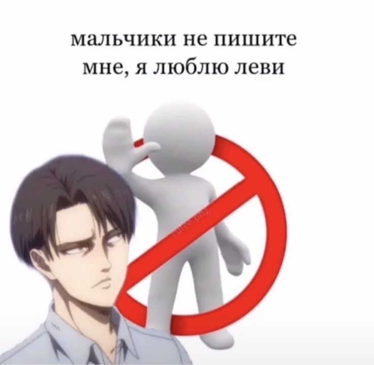
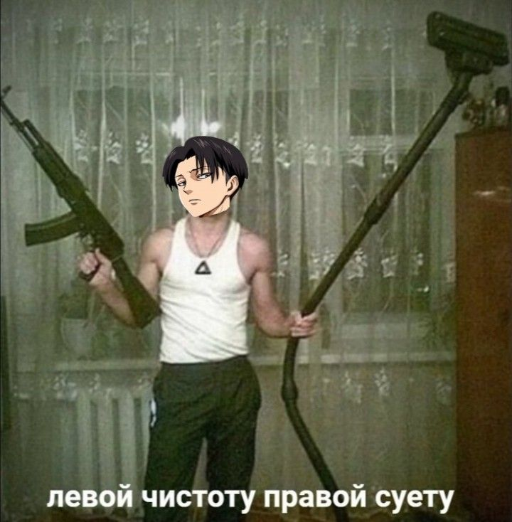
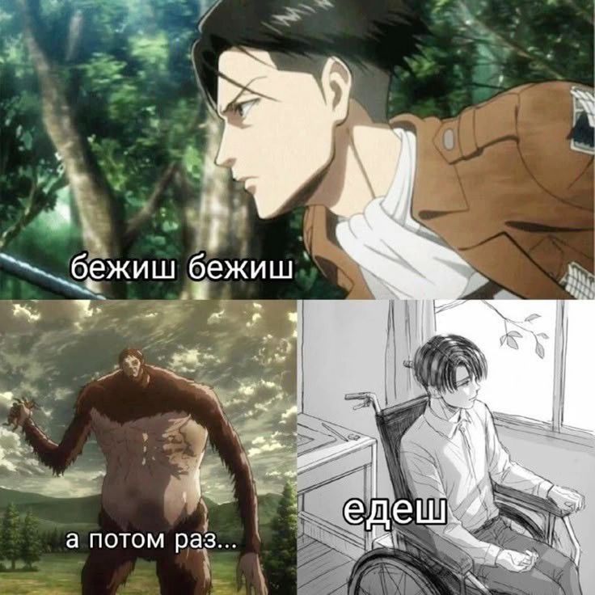
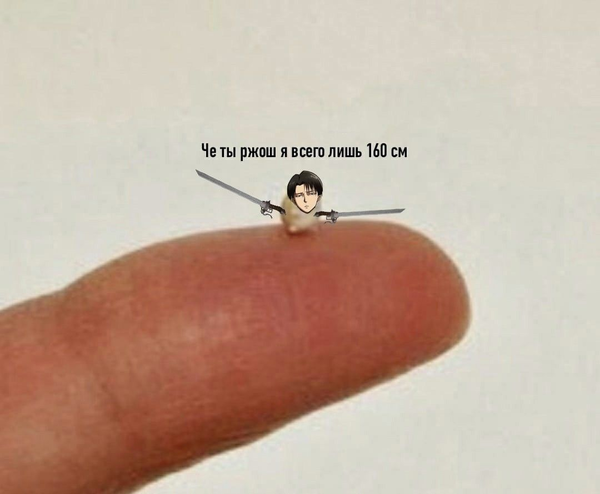
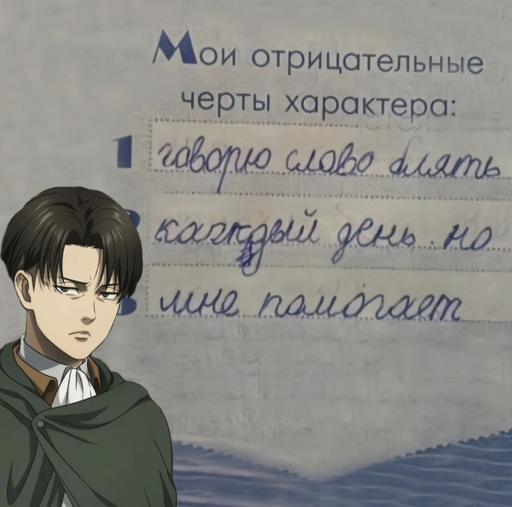
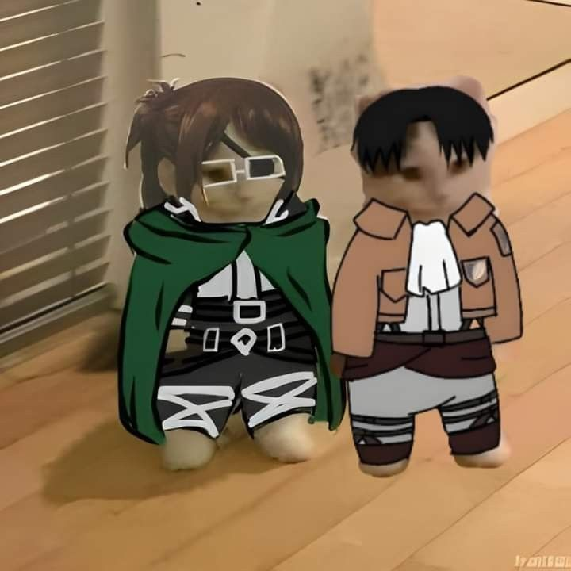
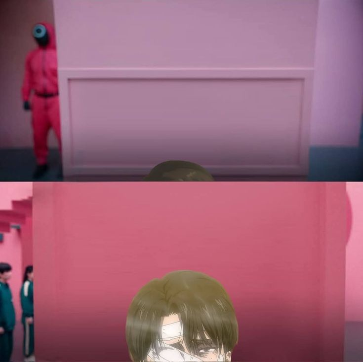
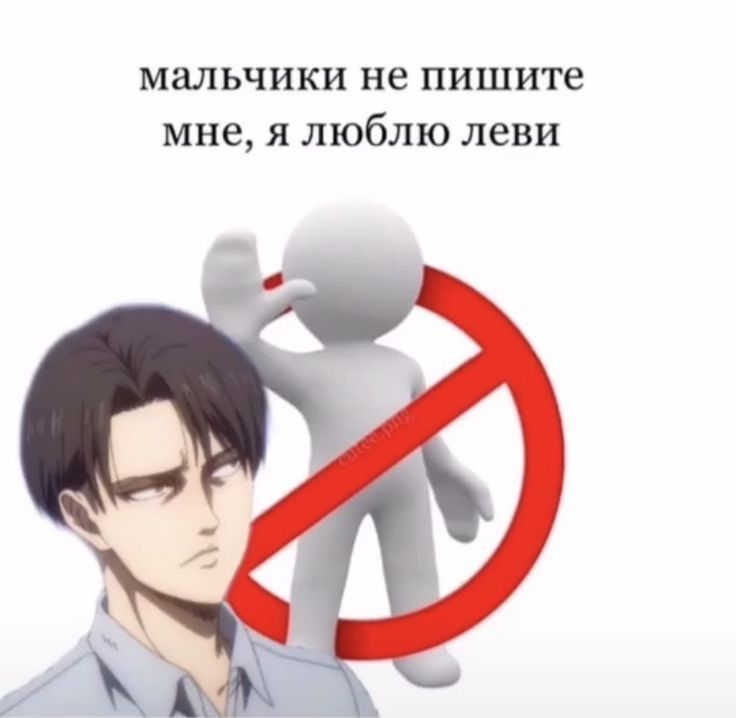
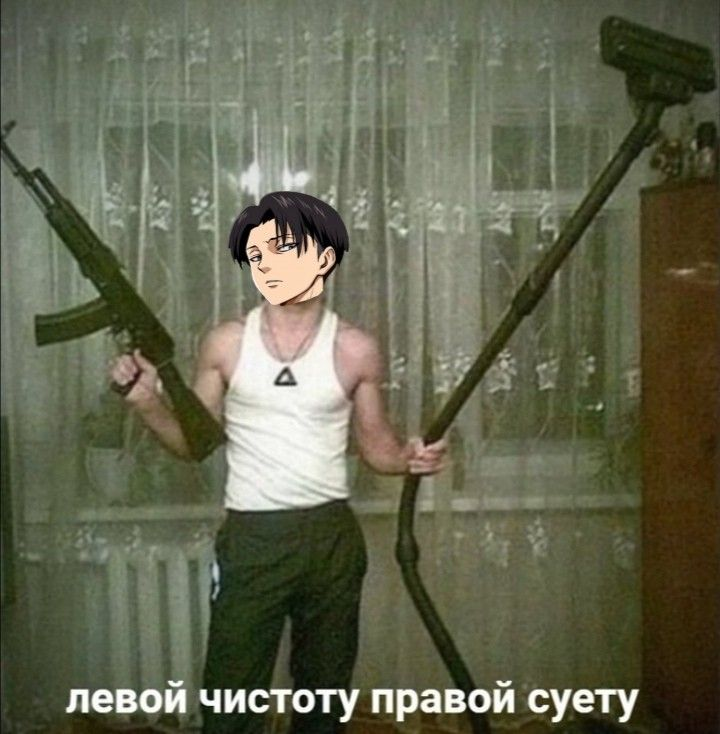
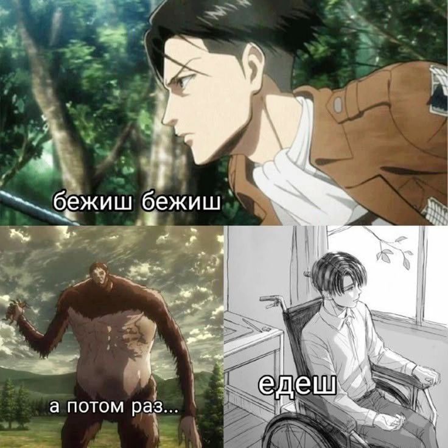
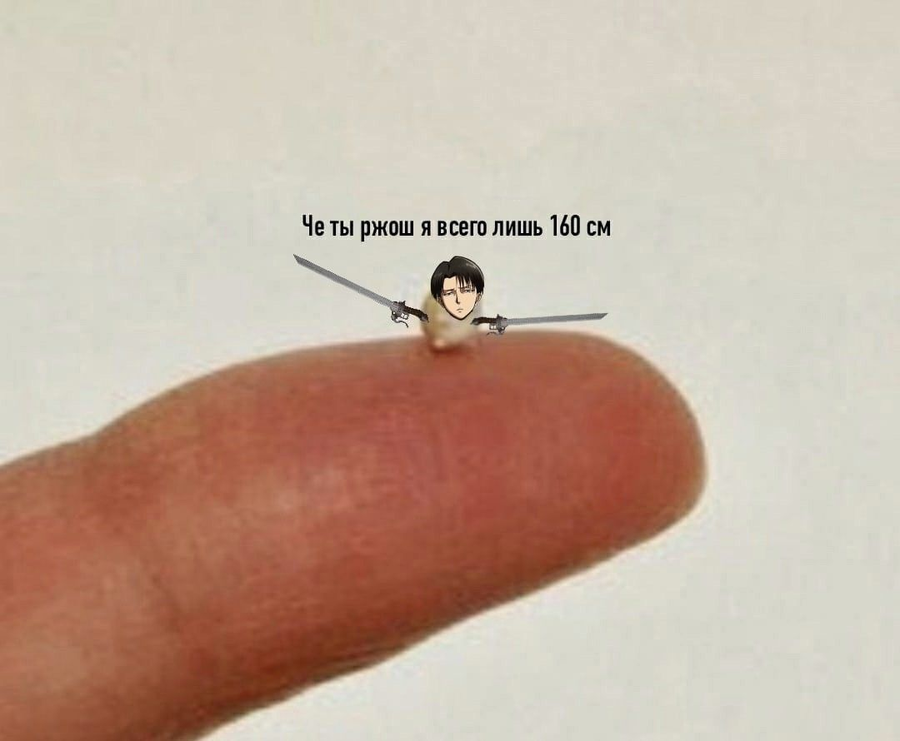
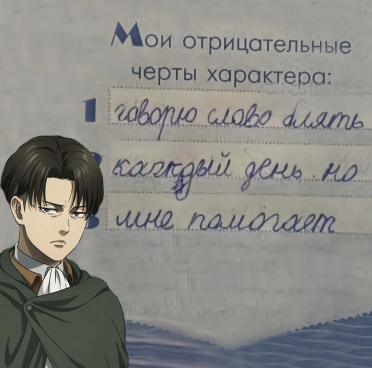
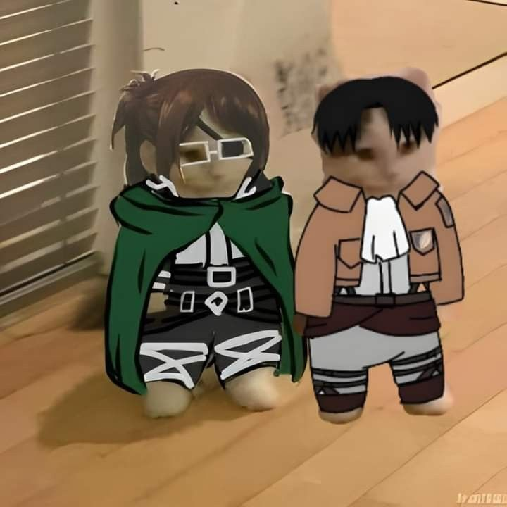
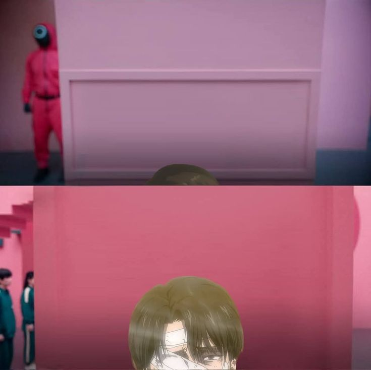